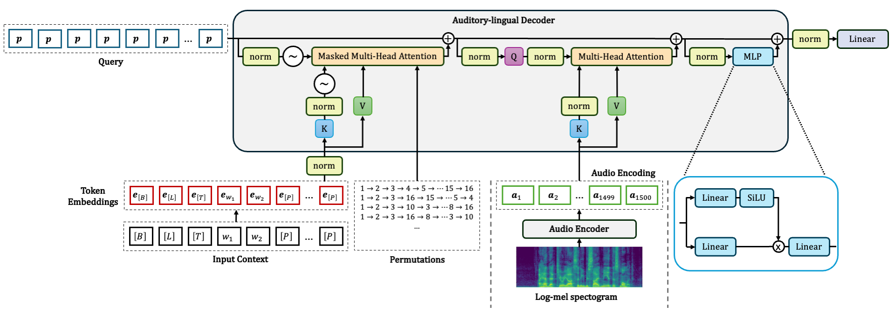

TrorYongASR: Permuted AutoRegressive Sequence Modeling for Automatic Speech Recognition
![]()
Abstract
TrorYongASR is an Encoder-Decoder model for Automatic Speech Recognition (ASR). It is designed for transcription and translation tasks and language detection based on audio. It is smaller than Whisper model, and has a competitive performance in term of WER and inference speed. TrorYongASR is inspired by PARSeq’s architecture (Bautista and Atienza 2022): the decoder has only one layer and predicts tokens corresponding to the observed positions. Currently, TrorYongASR has two configurations: tiny and small. Available pre-trained weights support Khmer and English languages, and TrorYongASR can be trained to support more languages without compromising any advantages mentioned earlier. Leveraging pre-trained weights of audio encoder of Whisper (Radford et al. 2023) as initialization, TrorYongASR achieves WER of 75.88% and 54.33% for Khmer and English respectively in tiny configuration; and of 50.46% and 21.75% in small configuration.
Evaluation
The evaluation assesses two capabilities — 1) language detection and 2) transcription — on two datasets (google/fleurs for Khmer and openslr/librispeech_asr for English). All results are from the test split of each dataset, representing the model’s generalization ability to unseen data.
| Dataset | Language | Testing examples | Description |
|---|---|---|---|
| google/fleurs | Khmer | 765 | Multi-lingual dataset with Khmer language samples |
| librispeech.clean | English | 2620 | Clean speech dataset for English transcription |
Audios longer than 30 seconds are excluded from the evaluation (that is why google/fleurs has 765 examples instead of 771).
TrorYongASR currently has 2 configurations as the following
| Model Size | Tiny | Small |
|---|---|---|
| Audio Encoder | 4 layers, 6 heads | 12 layers, 12 heads |
| Audio Context | 1500 | 1500 |
| Text Decoder | 1 layer, 12 heads | 1 layer, 24 heads |
| Text Context | 1024 | 1024 |
| Embedding Dim | 384 | 768 |
| Parameters | 29M | 136M |
The audio array are processed to log-mel spectrogram with 80 mels (the same as Whisper models of the same size)
Metrics and Results
Language Detection
Language detection measures model’s capability to recognize the spoken language from audio input. Since TrorYongASR currently supports 2 languages, this task becomes binary classification task. Classic metrics are used:
- Precision: Proportion of predicted languages that are correct
- Recall: Proportion of actual language samples correctly identified
- F1-score: Harmonic mean of precision and recall
Results:
| Model | Metrics | Khmer (fleurs) |
English (librispeech.clean) |
|---|---|---|---|
| Tiny | Precision | 100% | 100% |
| Recall | 100% | 100% | |
| F1-score | 100% | 100% | |
| Small | Precision | 100% | 99% |
| Recall | 96% | 100% | |
| F1-score | 98% | 99 % |
Tiny size achieved perfect language detection performance on both datasets, indicating excellent binary classification capability for distinguishing between Khmer and English audio. Small size performs slightly worst by tending to predict English language.
The 100% language detection scores may appear unusually high. This is expected because during pre-training, the model performs permutations on word tokens starting from position 3, while the first three positions (start token, language token, and task token) remain fixed. Since language detection relies on the language token at position 1, and this token is never permuted during pre-training, the model can achieve perfect accuracy on language detection tasks.
Transcription
For transcription task, 3 metrics below are used
- Token Error Rate (TER): Proportion of incorrectly transcribed tokens
- Character Error Rate (CER): Proportion of characters that are incorrect
- Word Error Rate (WER): Proportion of words that are incorrect
Token Error Rate measures model’s capability in predicting the next token given the audio input and the current sequence of tokens. This metric is weaker than Word Error Rate (WER) and Character Error Rate (CER) because it doesn’t account for insertions, deletions, substitutions, and autoregression as comprehensively. Token Error Rate is used here because Khmer text lacks word boundaries, making WER and CER calculations challenging without additional preprocessing.
Transcription Results:
| Model | Metric | Khmer (fleurs) |
English (librispeech.clean) |
Mixed (Khmer + English) |
|---|---|---|---|---|
| Tiny | WER | 75.88% | 54.33% | 60.36% |
| CER | 54.99% | 42.41% | 46.18% | |
| TER | 54% | 17% | 27% | |
| Small | WER | 50.46% | 21.75% | 29.78% |
| CER | 35.89% | 16.58% | 22.37% | |
| TER | 43% | 8% | 18% |
Key Observations:
- The tiny model shows strong performance on English (54.33% WER, 42.41% CER, 17% TER)
- Performance drops for Khmer (75.88% WER, 54.99% CER, 54% TER)
- The small model shows strong performance on English (21.75% WER, 16.58% CER, 8% TER)
- Performance for Khmer is moderate (50.46% WER, 35.89% CER, 43% TER)
- The larger model benefits from increased embedding dimension (768 vs 384) and more layers for audio encoder (12 vs 4)
Note: To compute CER and WER, whitespaces are added between words in Khmer text (Khmer text does not have word boundaries like English text). To do so, khmercut PyPI package is used to tokenize Khmer text into words, and then the words are joined back together with whitespaces.
WER Comparison with Whisper:
| Size | Model | Parameters | Khmer (fleurs) |
English (librispeech.clean) |
|---|---|---|---|---|
| Tiny | TrorYongASR | 29M | 75.88% | 54.33% |
| Whisper | 39M | 100.6% | 7.6% | |
| Small | TrorYongASR | 135M | 50.46% | 21.75% |
| Whisper | 244M | 104.4% | 3.4% |
Key Observations:
- Whisper models have more parameters for comparable sizes (39M vs 29M for Tiny, 244M vs 135M for Small)
- Whisper shows significantly lower word error rates on English (7.6% vs 54.33% for Tiny, 3.4% vs 12.95% for Small)
- Whisper performs worse on Khmer (100.6% vs 75.88% for Tiny, 104.4% vs 50.46% for Small)
- Error rates > 100% for Whisper on Khmer indicate the model is overfitting to the training data
Note: WER data of Whisper is taken from their paper.
Result Summary
Language Detection: Both model sizes achieved great performance across all metrics (Precision, Recall, F1-score) on both datasets, indicating excellent binary classification capability for distinguishing between Khmer and English audio. This high score is expected because during pre-training, the model performs permutations on word tokens starting from position 3, while the first three positions (start token, language token, and task token) remain fixed. Since language detection relies on the language token at position 1, and this token is never permuted during pre-training, the model can achieve perfect accuracy on language detection tasks.
Transcription: The Small model shows strong performance on English (21.75% WER, 16.58% CER, 8% TER) and moderate performance for Khmer (50.46% WER, 35.89% CER, 43% TER). The Tiny model shows strong performance on English (54.33% WER, 42.41% CER, 17% TER) but significantly lower performance for Khmer (75.88% WER, 54.99% CER, 54% TER). This shows that TrorYongASR can be scaled to get higher performance.
Note on Translation Task: The models are also trained for translation task, but evaluation is deferred to future work due to scarce data (there are only 2000 examples from Khmer audio to English text, and 1000 examples from English audio to Khmer text in the pre-training).
Downstram Tasks and Limitations
TrorYongASR can be integrated into:
- IoT devices: Smart speakers, voice assistants
- Mobile application: Android/iOS apps with speech recognition
- Larger ASR systems: As a component in multi-language ASR pipelines
Due to the lack of training dataset, TrorYongASR does not support
- timestamps prediction
- voice activity detection
- translation performance is still limited
TrorYongASR Design
In sequence modeling, deep learning models are trained to generate future tokens conditioned on past tokens. Concretely, for a given audio \({\boldsymbol{x}}\) and its corresponding \(T\)-length text tokens \({\boldsymbol{y}}\), the likelihood for the standard autoregressive model is given by \[ \mathbb{P}_\theta({\boldsymbol{y}}|{\boldsymbol{x}}) = p_\theta(y_1|{\boldsymbol{x}})\times p_\theta(y_2|y_1, {\boldsymbol{x}})\times \dots \times p_\theta(y_T|y_{T-1},\dots, y_1, {\boldsymbol{x}}) =\prod_{t=1}^Tp_\theta(y_t|{\boldsymbol{y}}_{<t}, {\boldsymbol{x}}) \tag{1}\] where \(\theta\) is the parameters of the model. One tries to find \(\theta\) that minimizes the negative log of Equation 1 \[\begin{equation} {\mathrm{NLL}}(\theta) = -\sum_{t=1}^T\log p_{\theta}(y_t|{\boldsymbol{y}}_{<t}, {\boldsymbol{x}}) \end{equation}\] This method is known as monotonic autoregressive generation.
Inspired by PARSeq model (Bautista and Atienza 2022), TrorYongASR adapts Permutation Language Modeling (PLM) (Yang et al. 2019) for Automatic Speech Recognition (ASR). Let \({\mathcal{Z}}_T\) be the set of all possible permutations of \(\{1,2,\dots,T\}\). Without loss of generality, \(T\) can be fixed and omitted from the expression to help the readability. Let \({\boldsymbol{z}}\in{\mathcal{Z}}\) be a permutation that specifies an ordering of the text tokens in \({\boldsymbol{y}}\) and define
\[\begin{align*} \mathbb{P}_\theta({\boldsymbol{y}}_{{\boldsymbol{z}}}|{\boldsymbol{x}}) = p_\theta(y_{z_1}|{\boldsymbol{x}})\times p_\theta(y_{z_2}|y_{z_1}, {\boldsymbol{x}})\times \dots \times p_\theta(y_{z_T}|y_{z_{T-1}},\dots, y_{z_1}, {\boldsymbol{x}}) =\prod_{t=1}^Tp_\theta(y_{z_t}|{\boldsymbol{y}}_{{\boldsymbol{z}}_{<t}}, {\boldsymbol{x}}) \end{align*}\] as the likelihood for a given \({\boldsymbol{z}}\). So, Equation 1 is the case where \(z_t=t, \forall 1\le t\le T\).
TrorYongASR finds \(\theta\) that minimizes the negative log-likelihood
\[ {\mathbb{E}}_{{\boldsymbol{z}}\in{\mathcal{Z}}}\left[-\sum_{t=1}^T\log p_{\theta}(y_{z_t}|{\boldsymbol{y}}_{{\boldsymbol{z}}_{<t}}, {\boldsymbol{x}})\right] \tag{2}\]
It is clear that TrorYongASR is more general than monotonic autoregressive method that predicts tokens in a single standard direction, namely left-to-right. Moreover, the objective function Equation 2 only requires modification on Auditory-lingual Decoder (Audio Encoder can follow the one of Whisper model). An overview of TrorYongASR architecture is given in Figure 1.
Performing Equation 2 means training all \(T!\) factorizations which is computationally expensive in pratice. Following PARSeq, TrorYongASR compromises this by choosing 8 permutations for each audio. That is, TrorYongASR minimizes the following
\[ \widetilde{{\mathrm{NLL}}}(\theta) = \frac{1}{8} \sum_{1\le k\le 8}\left[-\sum_{t=1}^T\log p_{\theta}(y_{z_t^k}|{\boldsymbol{y}}_{{\boldsymbol{z}}^k_{<t}}, {\boldsymbol{x}})\right] \tag{3}\]
As mentioned in (Bautista and Atienza 2022), the permutation \({\boldsymbol{z}}^k\) is encapsulated by the attention mask. For example, the standard casual attention mask enforces identity permutation. So, TrorYongASR also crafts the attention mask to enforce the ordering specified by \({\boldsymbol{z}}^k\). Table 1 gives an example with 4 permutations and their corresponding attention mask.

In the following sections, I first explain how I integrate RoPE in TrorYongASR as it is not obvious when query vectors contain purely positional information. Then, I elaborate attention mask manipulation specifically for ASR task where the decoder requires not just begin-of-sequence token (sot token for Whisper), but also language and task token in order to decode an audio.
RoPE Integration in Auditory-lingual Decoder
In PARSeq (Bautista and Atienza 2022), the decoder requires 3 inputs: position, context, and audio encoding. Its first Multi-head Attention module is used for context-position attention: query vectors encode the target prediction positions whereas context vectors integrate both semantic embeddings and positional information. This decouples the context from the target position, allowing the model to learn from PLM (see (Bautista and Atienza 2022) for more detail). PARSeq achieves this idea by using position embeddings as query vectors and adding position embeddings to token embeddings to form context vectors. However, RoPE is a rotational operator. So, one must design query vectors such that each position holds the same neutral information enabling RoPE to inject positional information right before the attention mechanism.
Position Basis
TrorYongASR uses a single embedding vector \({\mathbf{p}}\in {\mathbb{R}}^{d}\), where \(d\) is the embedding dimension, for each target prediction position to form query projection directly. This embedding vector \({\mathbf{p}}\in{\mathbb{R}}^{d}\) is learnable and can be understood as position basis. Also, the context vectors are just token embeddings. The positional information are incorporated into queries and keys via the rotational operator. This preserves the decoupling concept from PARSeq while enabling RoPE for better performance.
The motivation to use position basis \({\mathbf{p}}\) as query projection is due to 2 reasons. Firstly, one could use \({\mathbf{p}}'\in{\mathbb{R}}^{d}\) to form query vectors because positional information is incorporated via RoPE operation after query projection. Secondly, let \(W_q\in{\mathbb{R}}^{d}\) be the weights of the linear layer. The query projection of any target prediction position is given by \(W_q{\mathbf{p}}'\in{\mathbb{R}}^{d}\). Both \(W_q\) and \({\mathbf{p}}'\) are learnable. So, one can save parameters by directly model \(W_q{\mathbf{p}}'\) as \({\mathbf{p}}\).
Null Context
In PARSeq’s implementation, begin-of-sequence token, denoted by \([B]\), is assigned as null context and does not contain positional information. TrorYongASR preserves this by applying null rotation to the embedding of \([B]\). So, from position 1 onward, keys receive rotation that is one position slower than queries. For example, position 0 at index 0 of query projection, and language token \([L]\) at index 1 of key projection both receive the same rotation. The same for position 1 at index 1 of query project, and task token \([T]\) at index 2 of key projection and so on.
Attention Mask Manipulation
Following Whisper, TrorYongASR has 3 start-of-text tokens: begin-of-sequence, language, and task tokens. When generating permutations, the 3 tokens remain fixed and only text tokens are permuted. Table 1 shows an example of 4 permutations of three-element text sequence. Table 1 (a) corresponds to the standard autoregressive model with the standard causal attention mask.
| \([B]\) | \([L]\) | \([T]\) | \(y_1\) | \(y_2\) | \(y_3\) | |
|---|---|---|---|---|---|---|
| \([L]\) | \(1\) | \(0\) | \(0\) | \(0\) | \(0\) | \(0\) |
| \([T]\) | \(1\) | \(1\) | \(0\) | \(0\) | \(0\) | \(0\) |
| \(y_1\) | \(1\) | \(1\) | \(1\) | \(0\) | \(0\) | \(0\) |
| \(y_2\) | \(1\) | \(1\) | \(1\) | \(1\) | \(0\) | \(0\) |
| \(y_3\) | \(1\) | \(1\) | \(1\) | \(1\) | \(1\) | \(0\) |
| \([E]\) | \(1\) | \(1\) | \(1\) | \(1\) | \(1\) | \(1\) |
| \([B]\) | \([L]\) | \([T]\) | \(y_1\) | \(y_2\) | \(y_3\) | |
|---|---|---|---|---|---|---|
| \([L]\) | \(1\) | \(0\) | \(0\) | \(0\) | \(0\) | \(0\) |
| \([T]\) | \(1\) | \(1\) | \(0\) | \(0\) | \(0\) | \(0\) |
| \(y_1\) | \(1\) | \(1\) | \(1\) | \(0\) | \(1\) | \(1\) |
| \(y_2\) | \(1\) | \(1\) | \(1\) | \(0\) | \(0\) | \(1\) |
| \(y_3\) | \(1\) | \(1\) | \(1\) | \(0\) | \(0\) | \(0\) |
| \([E]\) | \(1\) | \(1\) | \(1\) | \(1\) | \(1\) | \(1\) |
| \([B]\) | \([L]\) | \([T]\) | \(y_1\) | \(y_2\) | \(y_3\) | |
|---|---|---|---|---|---|---|
| \([L]\) | \(1\) | \(0\) | \(0\) | \(0\) | \(0\) | \(0\) |
| \([T]\) | \(1\) | \(1\) | \(0\) | \(0\) | \(0\) | \(0\) |
| \(y_1\) | \(1\) | \(1\) | \(1\) | \(0\) | \(0\) | \(0\) |
| \(y_2\) | \(1\) | \(1\) | \(1\) | \(1\) | \(0\) | \(1\) |
| \(y_3\) | \(1\) | \(1\) | \(1\) | \(1\) | \(0\) | \(0\) |
| \([E]\) | \(1\) | \(1\) | \(1\) | \(1\) | \(1\) | \(1\) |
| \([B]\) | \([L]\) | \([T]\) | \(y_1\) | \(y_2\) | \(y_3\) | |
|---|---|---|---|---|---|---|
| \([L]\) | \(1\) | \(0\) | \(0\) | \(0\) | \(0\) | \(0\) |
| \([T]\) | \(1\) | \(1\) | \(0\) | \(0\) | \(0\) | \(0\) |
| \(y_1\) | \(1\) | \(1\) | \(1\) | \(0\) | \(1\) | \(1\) |
| \(y_2\) | \(1\) | \(1\) | \(1\) | \(0\) | \(0\) | \(0\) |
| \(y_3\) | \(1\) | \(1\) | \(1\) | \(0\) | \(1\) | \(0\) |
| \([E]\) | \(1\) | \(1\) | \(1\) | \(1\) | \(1\) | \(1\) |
So, the main implementation is to generate permutation \({\boldsymbol{z}}^k\) and derive the corresponding attention mask like Table 1.
References
Citation
@online{khun2026,
author = {Khun, Kimang},
title = {TrorYongASR: {Permuted} {AutoRegressive} {Sequence}
{Modeling} for {Automatic} {Speech} {Recognition}},
date = {2026-05-07},
url = {https://kimang18.github.io/krorngai-blog/TrorYongASR/},
langid = {en}
}